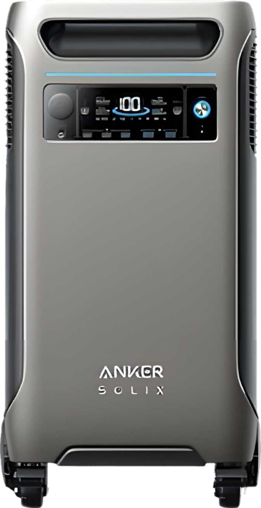
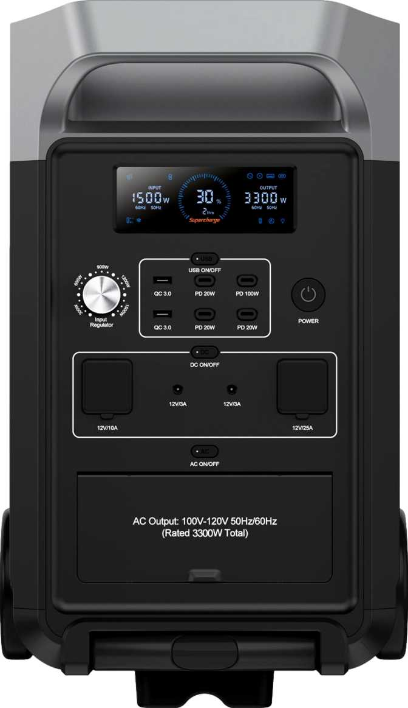

Why You Need a Home Backup Battery
Storms are getting stronger and blackouts are getting longer. A small camping battery won't cut it when you need to keep the refrigerator running, the WiFi on, and the lights bright.
We analyzed the heavyweights in our database to find the best solutions for home emergency backup.
1. The Heavyweight Champion: Anker Solix F3800
This thing is a beast. The Anker Solix F3800 is designed specifically to power your home. It features a massive capacity and supports 240V output, meaning it can technically run large appliances like a dryer or a well pump (with the right transfer switch). It comes with wheels, which you will need, because it packs serious battery cells.

2. The Industry Standard: EcoFlow Delta Pro
The EcoFlow Delta Pro defined this category. It has an expanding ecosystem that allows you to chain batteries together for days of power. Its "X-Boost" technology allows it to handle surges from heavy appliances like refrigerators and sump pumps without tripping.

3. The Budget Beast: Fossibot F3600
If you want maximum specs for the lowest dollar, Fossibot is the brand to watch. The F3600 offers capacity that rivals the Anker and EcoFlow models but often at a much more aggressive price point. It lacks some of the refined app features of the big brands, but the raw power is undeniable.

4. The Reliable Choice: Jackery Explorer 3000 Pro
Jackery entered the big leagues with the 3000 Pro. It features a luggage-style pull handle which makes it surprisingly easy to move around the house. It's quieter than many competitors, which is a huge plus if you are running it inside your living room during a storm.

Check Jackery Explorer 3000 Pro Specs
Summary
For powering a whole house (240V), the Anker F3800 is the winner. For a proven ecosystem, look at the EcoFlow Delta Pro. If budget is your primary concern, check the latest price on the Fossibot F3600.